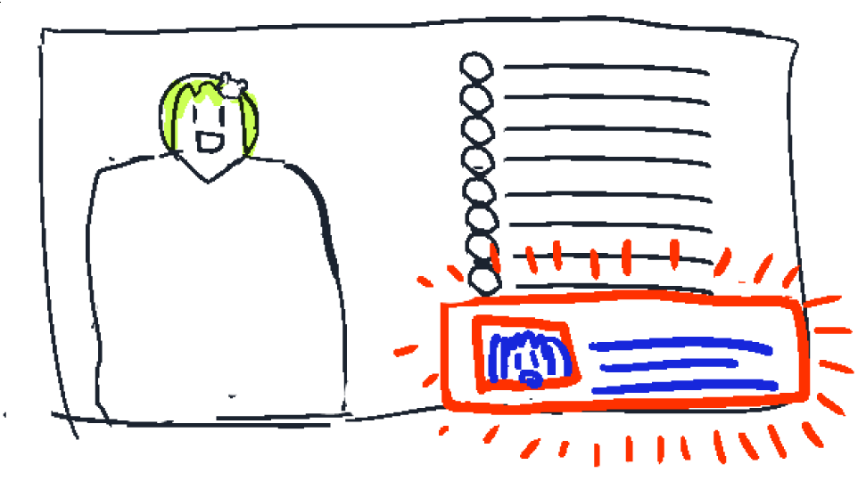

配信でVTuberがコメントをすると通知してくれるプラグインです。
VTuberがVTuberの配信でコメントすることが増えてきましたが、コメントを目で追うのは大変です。
これをインストールすると、VTuberのコメントを通知してくれるので、追うのが楽になります。
まずは、Tampermonkeyをインストールしましょう
※ このソフトを動かすために必要です
Tampermonkeyをインストール
Tampermonkeyをインストールしたら、次のボタンでインストールできます
YouTubeCommentNotifier.user.jsをインストール
うまくインストールできれば、次のように通知が出るはずです 
るーるるるー！動作確認にオススメの動画です！！！（YouTubeで開いて見てみてください）
GitHubのリポジトリです。